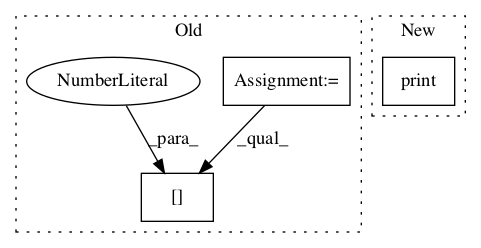

66de7491bd7e16a072e2d1302df1f88c277dae2e,adding_problem_100/rwa_model/train.py,,,#,25

Before Change
// Evaluate performance
//
correct = tf.equal(tf.round(py), tf.round(y))
accuracy = 100.0*tf.reduce_mean(tf.cast(correct, tf.float32))
////////////////////////////////////////////////////////////////////////////////////////////////////////////////////////////////////////////////////////////////////////////////////
// Train
////////////////////////////////////////////////////////////////////////////////////////////////////////////////////////////////////////////////////////////////////////////////////
// Operation to initialize session
//
initializer = tf.global_variables_initializer()
// Open session
//
with tf.Session() as session:
// Initialize variables
//
session.run(initializer)
// Each training session represents one batch
//
for iteration in range(num_iterations):
// Grab a batch of training data
//
xs, ls, ys = dp.train.batch(batch_size)
feed = {x: xs, l: ls, y: ys}
// Update parameters
//
out = session.run((cost, accuracy, optimizer), feed_dict=feed)
print("Iteration:", iteration, "Dataset:", "train", "Cost:", out[0]/np.log(2.0), "Accuracy:", out[1])
// Periodically run model on test data
//
After Change
// Run model
//
out = session.run(cost, feed_dict=feed)
print("Iteration:", iteration, "Dataset:", "test", "Cost:", out)
// Save the trained model
//
os.makedirs("bin", exist_ok=True)
In pattern: SUPERPATTERN
Frequency: 3
Non-data size: 3
Instances
Project Name: jostmey/rwa
Commit Name: 66de7491bd7e16a072e2d1302df1f88c277dae2e
Time:
Author: null
File Name: adding_problem_100/rwa_model/train.py
Class Name:
Method Name:
Project Name: chuyangliu/snake
Commit Name: 7e799d025a71b84c844253e22e15cee7060975d6
Time:
Author: null
File Name: run.py
Class Name:
Method Name:
Project Name: deepmipt/DeepPavlov
Commit Name: 29ee3e34123191e7b444915b6be56edd8699aa36
Time:
Author: null
File Name: deeppavlov/core/commands/infer.py
Class Name:
Method Name: interact_model